Squinter
A development tool to manage app and library files for Electric Imp projects
Latest Release: 2.3.133
Download And Install Squinter
Please verify the integrity of the download with the SHA-256 checksum.
| File | squinter_2_3_133.dmg |
|---|---|
| File Size | 14MB |
| SHA 256 | 40387ea1d9a1cbe484bcf2cfafedfd195e61ca39c3edbb95f0992f2b87d905f0 |
About Squinter
Squinter is a utility to help you work on Electric Imp software development projects using your own editor and code files you keep in a local folder — which may also be synchronized with a cloud service like Dropbox or a version control system like GitHub.
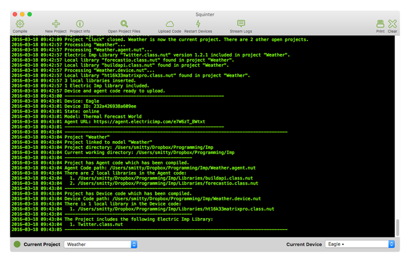
With Squinter and Electric Imp’s impCentral™ API you can:
- Work on your Electric Imp project code in your favourite text editor
- ‘Compile’ in local library and other files before uploading the complete code to the Electric Imp impCloud™
- You can take charge of your devices:
- Assign them to application firmware (via device groups)
- Update their code
- Reboot devices to run newly uploaded code
- View device logs
- Work with code in a source control system
- And much more…
How To Use Squinter
Contents
- Electric Imp Accounts
- Working With Source Code Files
- Working With Projects and Products
- Working With Device Groups
- Working With Devices
- Incorporating Libraries And Files In Your Code
- Deploying Code
- Debugging Code
- Configuring Squinter
- Updating Squinter
Electric Imp Accounts
Squinter requires an Electric Imp account. Sign up is free at impcentral.electricimp.com. Production functionality requires an Enterprise account, for which you must be an Electric Imp customer. Log in using the Account menu:
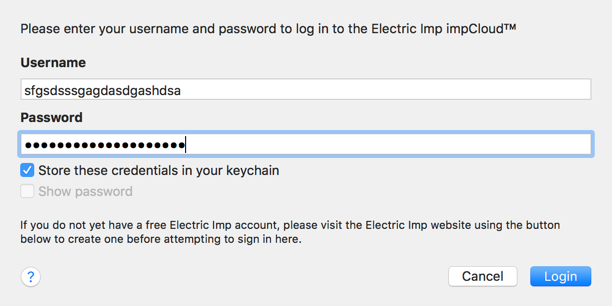
Note Hold down Option and then click the Account menu to sign temporarily into another account. This will not overwrite your stored credentials (unless you check the box on the login sheet), but will sign you out of your current, main account.
Note Squinter no longer supports accounts in the Azure impCloud, which is no longer provided by Electric Imp.
Working With Source Code Files
Squinter expects your source code to be held in text files, and will open source files in your default text editor. However, you may decide to give your code files the standard Squirrel .nut extension. To ensure that this doesn’t ‘fool’ the OS (which may cause Squinter to fail to open source code files correctly), select any .nut, hit Command-I and select your preferred text under under Open with:, and then click Change All….
Working With Projects and Products
Squinter works with ‘projects’, each of which is stored as a project file on disk. Each Project links to an impCentral ‘product’ and references the ‘device groups’ (see below) that that product contains. For each device group in the product, the project records which local files contain the source code that will be deployed to that device group. Project files are identified by the .squirrelproj file extension. Squinter lets you create new projects, either from scratch or by downloading products that already exist in the impCloud.
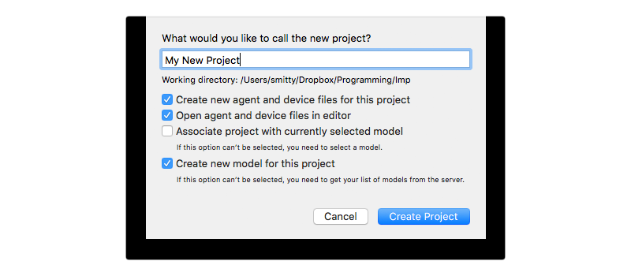
Projects are listed in the Open Projects sub-menu in the Projects menu, which also presents actions you can perform on the currently selected project. You can also select a project from the Current Project popup in Squinter’s main window.
New projects are saved by default to Squinter’s working directory, which you can set in the app’s Preferences panel. However, you can also navigate to an alternative location when you save the project. To create a new Project, click on appropriate toolbar button or select the relevant option from the Files menu (Cmd-N). This menu also lists recently opened projects — as does Squinter’s dock icon. You can also save your current project to a new file if you wish.
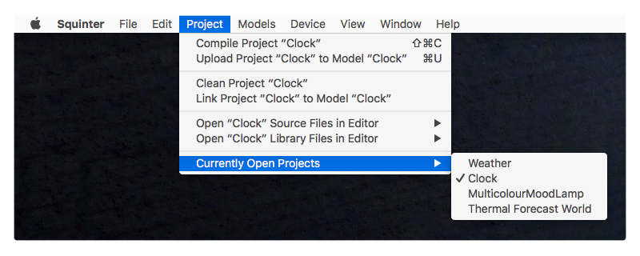
You can create projects when you are not signed in to your Electric Imp account — perhaps because you’re out of WiFi range — and you can upload these at a later time, when you have logged in.
The Projects menu also presents a list of products associated with your Electric Imp account. Each project maintains a one-to-one mapping with a uniquely named product. New projects are uploaded to the impCloud as products, and existing products can be downloaded as projects, complete with any device groups they contain and the code deployed to those device groups.
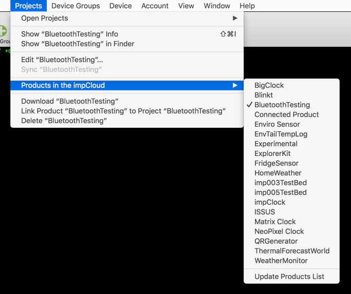
In addition to your own account’s products, Squinter also lists any products owned by other users but which you have been granted access to as a collaborator. If you are a collaborator, you will see a Products Shared With You entry in the Projects menu’s Products in the impCloud sub-menu. Shared products are listed by the account to which they belong.
Squinter also allows you to perform tasks on a selected product, including linking it to an existing project, or deleting it from the impCloud. Only products that contain device groups with no assigned devices (or no device groups at all) can be deleted.
When you change a project or one of its device groups, Squinter will indicate to you that the project file needs to be saved. It does so using the green circle next to the Current Project popup in the main Squinter window: an empty circle tells you the currently selected project has changed and may need to be saved. If you don’t wish to save the changes, you can choose to ignore them when you quit Squinter or close the project.
Note Squinter does not guarantee any operation is atomic. It is always possible that the first change it makes succeeds but the next one fails — for example, if the connection is lost, or because the first changes an assumption on which the second is based. In such cases, the overall operation is partially completed, but Squinter does not restore the original state of already changed entities and reports a failure.
You can update a Project with the Projects > Sync Project… option, which will tell you which Device Groups are present on the server but not recorded locally. You then have the option to download any of these device groups to your project, which will also download the most recent deployment made to each device group if any deployments have been made.
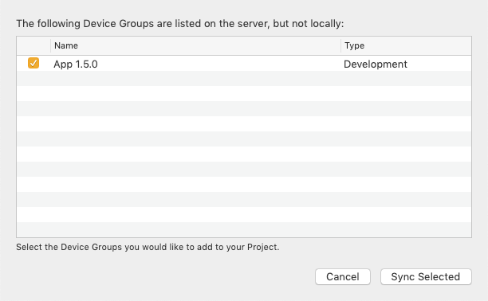
The Sync Project… option will also check for ‘orphaned’ device groups — those which exist locally but not in the impCloud within the project’s source product (if it has one). Again, you can then choose to upload any or all of these device groups to the product. New device groups will be created in the impCloud and the groups’ local code will be uploaded if it has been compiled. If it has not been compiled, you can compile and upload the code later.
Working With Device Groups
Squinter lists all of the device groups that belong to a given project. When you select a project, its device groups, if any, are listed in the Project’s Device Groups sub-menu in the Device Groups menu. Initially, the first device group, listed alphabetically, is selected when you open or select a project. Only the device groups that belong to the currently selected project are listed, so to view a device group from another project, just select or open that project.
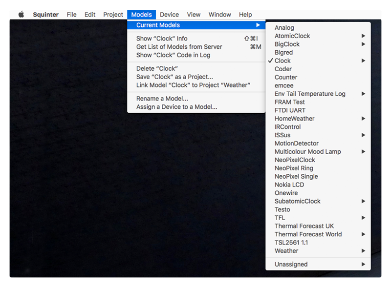
If any devices have been assigned to a device group, they are listed as sub-menus to each device group listed in the Project’s Device Groups sub-menu. Selecting a device automatically selects its parent device group.
The Device Groups menu is sensitive to the device group that you have selected. The currently selected device group is also shown in the Project/Device Group popup menu at the bottom of the main window, though this is for informational purposes only — you can’t select a different device group here. To do so, you can select one of the entries in the Project’s Device Groups sub-menu in the Device Groups menu. You can also use the Cmd-[ and Cmd-] to move quickly to, respectively, the next or previous device group in the list of the current project’s device groups, if there are any.
When you select a project or one of its device groups, the Device Groups menu enables a number of actions which can be performed on the selected device group. This includes editing its name and/or description, getting information about the code deployed to it, and even deleting the device group from your project and the impCloud. However, you can’t delete a device group that has devices assigned to it. You can restart simultaneously all of the devices assigned to the selected device group here too.
Because the code you work on will be uploaded to a given device group rather than to a project (as was the case with Squinter 1.0), you will find the commands that allow you to access a device group’s source code files (and any libraries or other Squirrel files they import) from sub-menus included in the Device Groups menu.

You can add a new device group to a project either by selecting the option from the Project’s Device Groups sub-menu, or by choosing Add source files to Project from the Files menu. This can be used to add agent and/or device code files to an existing device group, or to add them to a new Device Group created there and then.
Squinter supports all of the available device group types, but you may not be able to work with production groups if your accounts lacks suitable permissions.
Test Fixture and Fixture device groups both require the presence of other types of device groups. When you attempt to create either Test Fixture or Fixture device groups, you will be asked to select a (Test) DUT device group and a (Test) Production device group as the new group’s targets. Until your project contains these two types, you will not be able to create a (Test) Fixture and Fixture device group. You can change either or both of a (Test) Fixture and Fixture device group’s targets by selecting the Set Target Production Device Group and the Set Target DUT Device Group options in the Device Group menu. These options remain disabled until you select a a (Test) Fixture device group.
From Squinter 2.3.131, you can access a device group’s user-defined environment variables. With a project open and one of its device group’s selected, click on Update Device Group’s Environment Variables... in the Device Groups menu. By default, device groups have no variables set, so Squinter will show you an empty list:
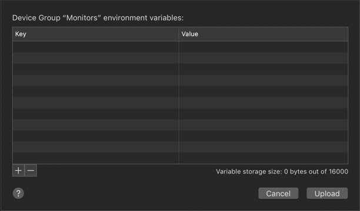
Click on the button to add a key-value pair. impCentral records user-defined variables as key-value pairs: the name of the variables and its value. Keys can by up to 100 characters in length and include only alphanumeric characters and underscores. Values can be strings or numbers (either floats or integers), and when you enter a value, Squinter indicates its type with an ‘s’ or an ‘n’ symbol, respectively:
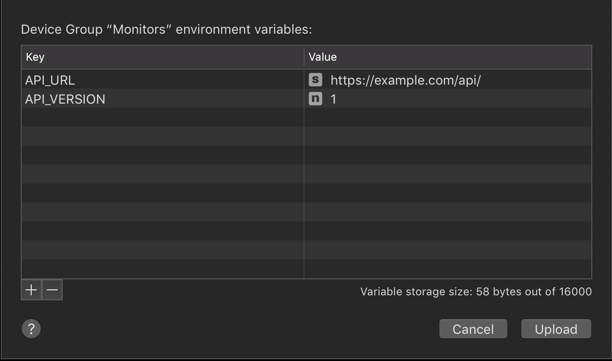
Click Upload to send the variables to the impCloud, or Cancel to make no changes. impCentral imposes an approximately 16KB limit on the size your key-value pairs (including the keys’ names), so Squinter will warn you if you exceed this total. The sheet has a size readout which updates as you add and amend the device group’s variables. You can read more about how impCentral user-defined variables work in the Electric Imp Dev Center.
You can remove any of the listed variables by selecting one or more of them and then clicking the button. You will be asked if you are sure that you want to remove the selected variable(s). If you click OK, you can still click the sheet’s Cancel button to undo the deletion, but this will also ignore any other changes you may have made.
Working With Devices
Squinter keeps track of your development devices. It lists these in the Device Groups menu’s Project’s Device Groups sub-menu, alongside the device group each device is assigned to. Unassigned devices are listed in their own sub-menu under the Device menu. Specific devices can also be selected from the Current Device popup menu in Squinter’s main window.

In each of these lists, each device’s status — online or offline; logging or not — is listed alongside their names: for online and for logging.
The Device menu presents actions you can perform on the currently selected device, including getting information about it, renaming it, removing it from your account, and removing its association with a device group (unassign it).
You can also force the device to restart. If you want to force all of the devices assigned to a given device group to restart, not just the selected one, there’s an option for that in the Device Groups menu.
To update the information Squinter holds about all of of your development devices, select the Update Devices’ Status command in the Devices menu. This can be selected at any time, and there is an option in Squinter’s Preferences panel to have this information retrieved automatically whenever the app starts up. You can also choose to have this information automatically updated periodically.
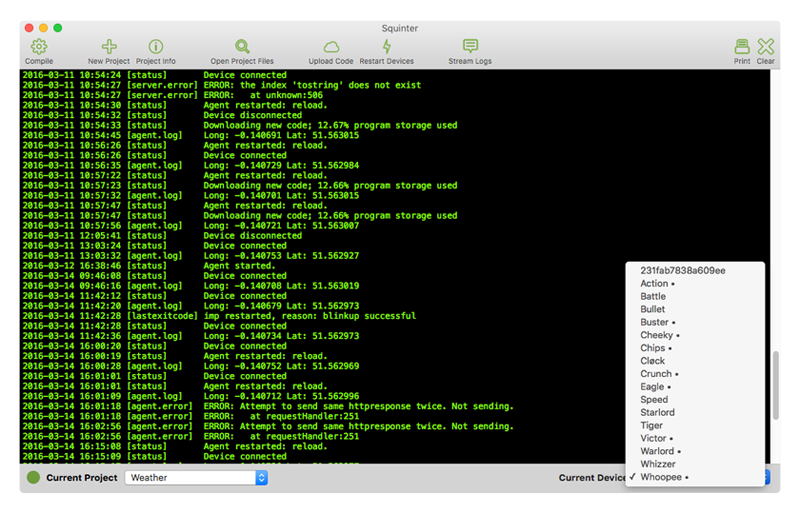
The Devices menu also maintains a sub-menu of unassigned devices — those which have not yet been assigned to a device group or have been removed from one. When you add a new development device to your account, it will first appear in this list, though you may need to update the menu (use the Update Devices’ Status command) to see it. Selecting a device from this list will affect the Devices menu but not the currently selected device group.
Optionally, you can have Squinter automatically update its device information database periodically (every five minutes). This is enabled by default, but can be disabled or re-enabled using the Device menu’s Keep Devices’ Status Updated option. A tick indicates device information will be regularly updated for you.
In addition, Squinter’s Inspector panel can be called up (Cmd-Alt-I) to provide persistent device, and project information:
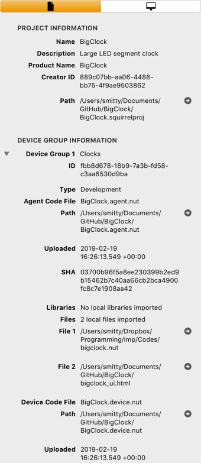 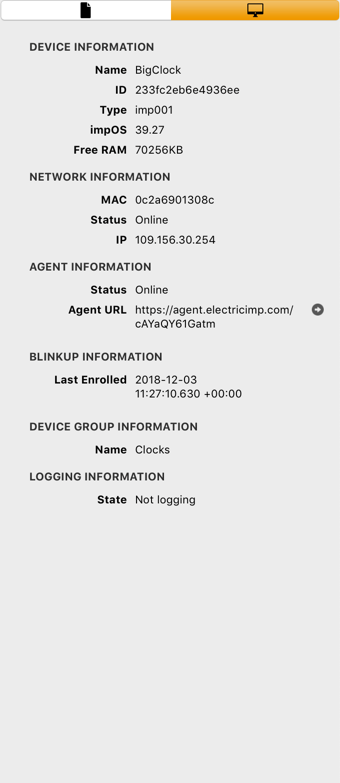
This panel will update as you select devices and/or load or select different projects.
Squinter lists devices by their names, though their IDs and MAC addresses also appear in the Inspector (as shown above) or in the log when you hit Cmd-I. Sometimes, however, you may only have a device’s ID or MAC address, or its agent ID. In this case, select Find a Device... from the Device menu, of hit Cmd-Shit-F. This will call up a panel in which you can enter a device’s ID or MAC address, or an agent ID, and Squinter will locate which of your named devices matches the entered information. As you enter the ID or MAC, Squinter narrows down the list of possible devices. Select the device you want by clicking on its name in the presented list and then click the Switch to Selected Device button to select it as the current device:

Incorporating Libraries And Files In Your Code
Squinter lets you incorporate multiple files into the source code that is deployed to a given device group. Electric Imp applications comprise two files: one for device code, the other for cloud-based agent code. Squinter lets you embed into them links to other files, such as local libraries.
For example, you might want to use the same library in multiple device groups — they all use the same sensor, say — even between device groups that belong to different projects. Sharing a single library file allows you to update that file without having to edit every listing of device or agent code that uses it. You just recompile each device group’s source code to incorporate the changes you’ve made to the single library file.
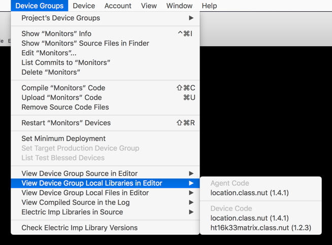
Squinter expects your primary source code files — a device group’s base device and agent code — to be named in the standard Electric Imp schema: *.agent.nut and *.device.nut for, respectively, your agent and device code. The two identifiers (represented here by the wildcard *) need not be identical.
Local library files should be entered into your agent and device source code using the following syntax:
#import "library_filepath\library_filename"
#include "library_filepath\library_filename"
This is to distinguish these libraries from Electric Imp online libraries, which use the #require directive.
The name of the library file is arbitrary, but *.class.nut and *.library.nut are the recommended forms. You may include a full Unix file path; if you only provide a filename, Squinter expects the file to reside in the same directory as the *.squirrelproj project file (see Working with Projects and Products, above). You can specify files that need to be reached by moving up through your folder hierarchy by including .. to mean ‘go up one level’. For example:
#import "../../../generic/bootmessage.nut"
This means go up three folders then down to the folder generic and thus to the file bootmessage.nut.
Internally, Squinter stores all file locations as paths relative to the project file, though you can choose how file paths are displayed by changing the app’s Preferences. When Squinter compiles code, it re-checks the links it has against those included in the #include statement, updating its internal record as required. Squinter will warn you if you move a file while is running.
Squinter lets you store both library files and blocks of Squirrel or other data in *.nut and *.txt files. At compilation, all of these sources are inserted into a master copy of the source code, and it is this ‘compiled’ Squirrel which will be uploaded to the selected device group.
Squinter is able to identify version information within your files and libraries. The primary way to make use of this is to include the statement #version "x.y.z" in your file. However, Squinter also supports Electric Imp style: it is able to detect static version = "x.y.z" and const version = "x.y.z" in library files.
Identified version numbers are presented in the sub-menus under the Device Group menu. Squinter will let you know if a file included in a project has been updated since you last saved the project.
Deploying Code
Squinter allows you to upload compiled code direct to the selected device group: select the Upload option in the Device Groups menu. Alternatively, holding down the Option key makes this command Upload with Extra Information; when selected, it pops up a panel into which you can enter an optional commit message, an optional source URL and an optional set of one or more tags for the deployment. Click on the Upload button to include any extra information you add to the upload, or click Skip Extras to upload just the code.
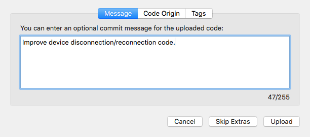
Both of these options are available as separate toolbar items:
The Upload and Upload Extra toolbar buttons
The Upload Extra Information item is not part of the standard Squinter toolbar layout, so you will need to click on Customize Toolbar… in the View menu to add it. You may also wish to add the Show Commits button:
The Show Commits toolbar button
This will call up a list of all the commits/deployments made to the currently selected device group:
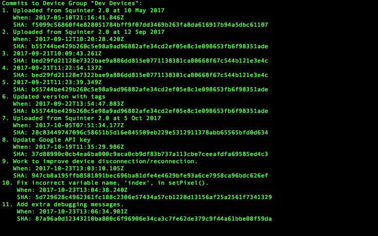
Having uploaded code, you can restart the currently selected device by selecting Restart from the Device menu, or restart all of the devices assigned to the current device group by selecting Restart from the Device Groups menu.
Squinter supports polite Squirrel deployment: it allows you to set a device group’s minimum supported deployment, and to make conditional restarts of the devices assigned to the group. You will not be able to select a minimum deployment that is older than the current one; selecting a new minimum deployment will block all earlier deployments from being selected, whether they were available before you made the change or not.
To conditionally restart a device group’s devices, hold down the Option key and select Conditional Restart Devices from the Device Groups menu.
Debugging Code
You can retrieve the most recent log entries for the selected device in one go (up to a maximum of 200), or you can stream logs from the device: entries will appear in Squinter’s main window in real time. You can currently only stream from up to five devices at a time. This is a limitation of the impCentral API.
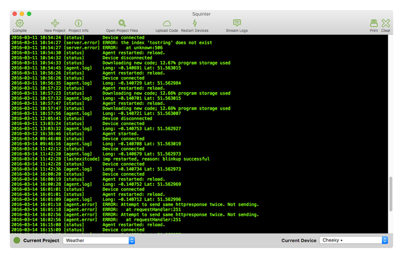
When you upload code — using the Upload button or the Device Groups menu option — the Electric Imp impCloud will perform a syntax check. Any errors it spots will be reported in Squinter’s log window. Line numbers refer to the compiled code, so you can use two actions in the View Compiled Source sub-menu under Device Groups to list the current compiled code to help you track down the errors. These two options — one for device code, the other for agent code — will list the compiled source for the currently selected device group.
If the log window becomes too crowded, you can clear it using the Clear button in the toolbar, which is also home to a number of shortcuts to various functions provided by Squinter’s menus. You can also print the current contents of the log window if you have a printer.
Configuring Squinter
To take full advantage of Squinter’s features, you will need an Electric Imp account. With Squinter 2 you no longer require a Build API key. Instead you must sign into your account using your Electric Imp username and password before Squinter can access the impCloud on your behalf. When you first run Squinter 2, it will ask you for these credentials and give you the option to store them securely in your keychain to automate login in future. The Account menu provides a means to log into your account later if you choose not to do so at the start, or to subsequently sign out.
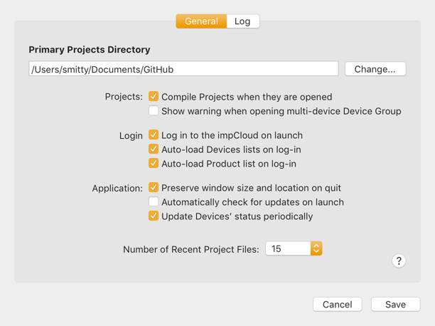
Squinter’s Preferences panel includes a setting to log in when Squinter starts up. Other options include compiling the code linked to all of a project’s device groups when a project is opened, and automatically retrieving the latest device and product information at log-in.
In addition, Preferences contains settings for the colour of Squinter’s log pane, which mono-spaced font is used, and how file paths should be displayed. You can also choose how many recently opened project files Squinter will remember for you, and how many historical log entries, device history events and past commits will be retrieved when you ask for any of these items.
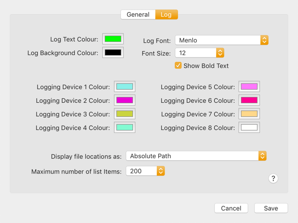
Squinter’s toolbar is also customisable: select the appropriate option from the View menu to make changes to the initial, standard layout. You can also choose to hide the toolbar. Squinter supports full-screen mode: click on the green traffic light at the top left of the window.
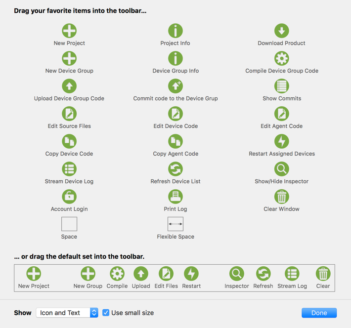
Squinter would not be possible without open source software contributions from a number of developers. They are listed in the Acknowledgements section of the Help menu, along with links to the source code Squinter uses.
Updating Squinter
You can check for Squinter updates by using the appropriate command in the Squinter menu. You can also tell Squinter to check for updates on your behalf: just check the relevant box in the Preferences panel.
Troubleshooting
Crashes occurring when Squinter starts are typically the result of changes made to the app’s preferences during development. The first action to take is to delete the file ~/Library/Preferences/com.bps.Squinter.plist. You may also need to remove the folder ~/Library/Caches/com.bps.Squinter.
Release Notes
The release notes section has now moved to its own page.
Source Code
You can view Squinter’s source code at GitHub.
Related Software


Site and software copyright © 2014-20, Tony Smith
Site Last Updated: 4 January 2020